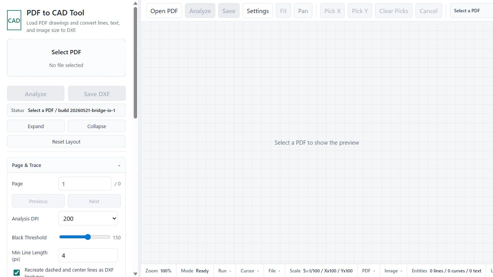

公開中のツール
既存の公開ページは残したまま、このホームページを入口として使う構成です。
公開元の整理
このページをトップに置き、各ツールは専用リポジトリで保守します。
入口は一つに
検索や共有ではこのトップページを案内し、利用者は目的に合わせて各ツールへ移動できます。
ツールは分けて保守
既存の公開URLとリポジトリを残すため、更新や不具合対応の影響範囲を小さくできます。
既存の公開ページは残したまま、このホームページを入口として使う構成です。
このページをトップに置き、各ツールは専用リポジトリで保守します。
検索や共有ではこのトップページを案内し、利用者は目的に合わせて各ツールへ移動できます。
既存の公開URLとリポジトリを残すため、更新や不具合対応の影響範囲を小さくできます。